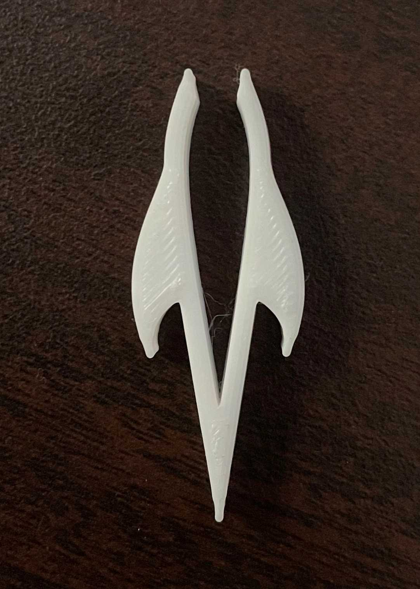

【ピンセットの進化】 ストッパーが付いているとどうなるか
進化の方向性
ピンセットを進化させるが、どういった方向性で考えていこう？
身体を拡張できるもの？ユニーク性に富んだもの？
私は、ちょっとした便利機能が付いたピンセットがあったらおもしろいのではないかと考えました。
制作
1.アイデア出し
まずはスケッチに自分が思いついたものを描いてみました。
2.造形
これを元にfusionで形にしてみました。

作成してから気づきました… 幅がデカすぎる（だいたい４cmくらい）
↓ 修正したものです。

3.完成したもの
完成したもののstlファイル
4.作品の説明
ストッパーが付いていることで、やわらかいものを挟むときに力の入れすぎを防ぐことができると思います。
はさむところにカーブを付けることで丸いものや滑りやすいものも簡単につかむこともできます。
まとめ
初めての３Dプリントが特別滞ることなく進められて安心しました。
今回は機能的な要素を思い描きましたが、もっとユニークに富んだ要素のピンセットを作ってみるのもおもしろそうだと感じました。
余談（おもしろがって作ったもの）
